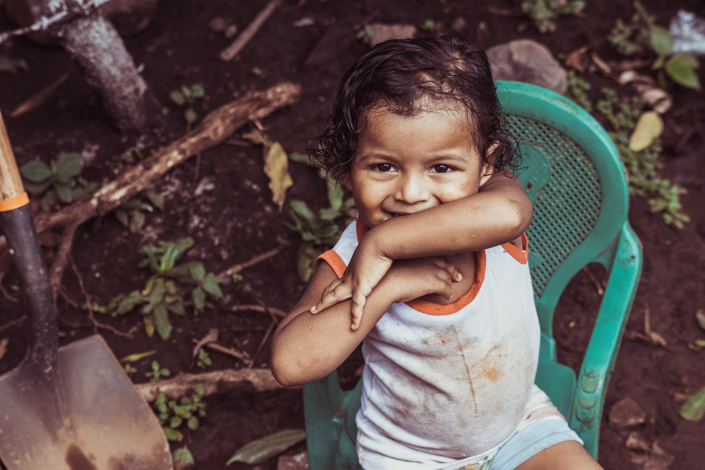
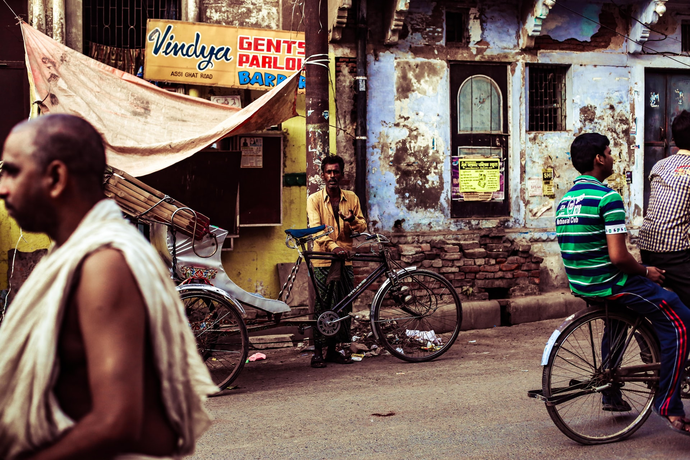

Poverty
More than 700 million people live in extreme poverty, with less than US$1.90 a day.
Know how to helpFacts
- Sub-Saharan Africa represents the majority of people living with less than $1.90 a day.
- 8% of employed workers and their families worldwide lived in extreme poverty.
- Globally, there are 122 women aged 25 to 34 living in extreme poverty for every 100 men of the same age group.
- High poverty rates are often found in small, fragile and conflict-affected countries.
- One out of five children live in extreme poverty.
- 55% of the world’s population have no access to social protection.
- Only 41% of women giving birth received maternity cash benefits.
This info is provided by United Nations.
Most affected areas

How to Help
Here you can find different entities and communities that you can join as volunteer to help on this fight against poverty.
People against Poverty

A global community that has as intention alleviate poverty and suffering around the world.
They run child sponsorship in Romania, Haiti, Nepal, India, Malawi and Tanzania
Action On Poverty
A non-government organization that focuses on evidence-based development to help communities break the poverty cycle for good.
They work on Africa, Asia and Pacific in different programs, from poverty to water and sanitations.
Oxfam
Is a global movement of millions of people who believe that poverty isn't inevitable, in a world rich in resources.
Working on 67 countries this movement acts in different fields like: water, health and education, women's empowerment, access to work and equality.